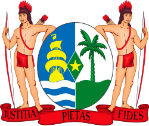

Klimatologie van Suriname
🌴 Tropisch Palet
🌦 Seizoensindeling
🌡 Temperaturen
🌬 Wind & Weersinvloeden
✖
Kies hieronder een categorie om verder te gaan:
🌿 Seizoensverwachting

🏳️ Klimaat in het verleden
🌤 Klimaatnormalen